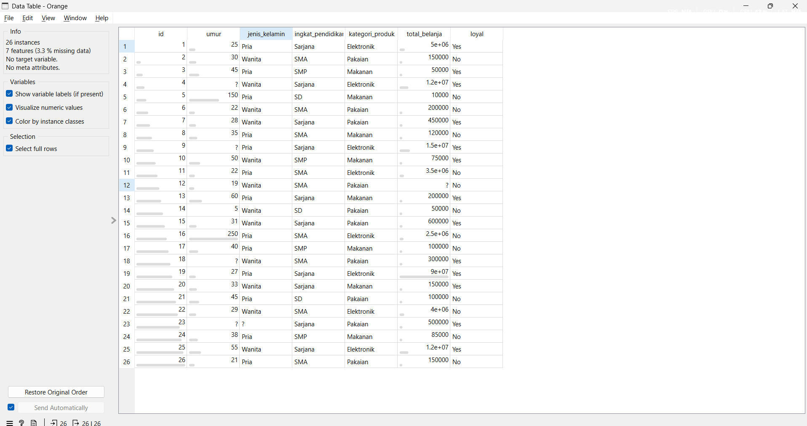
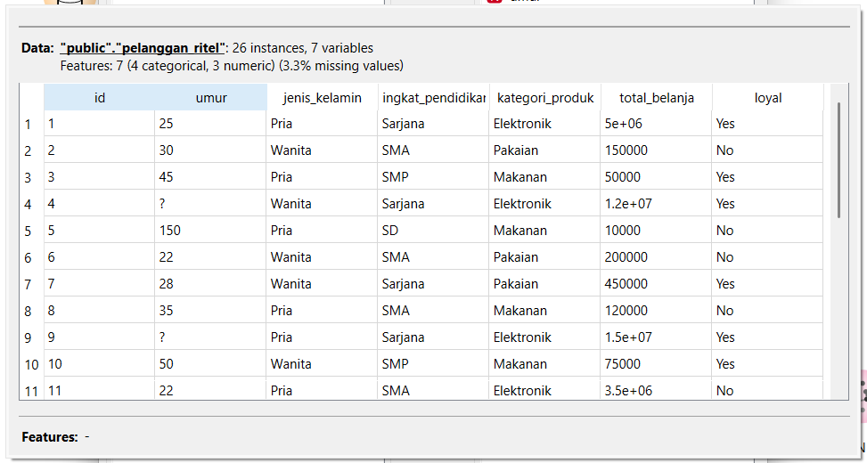
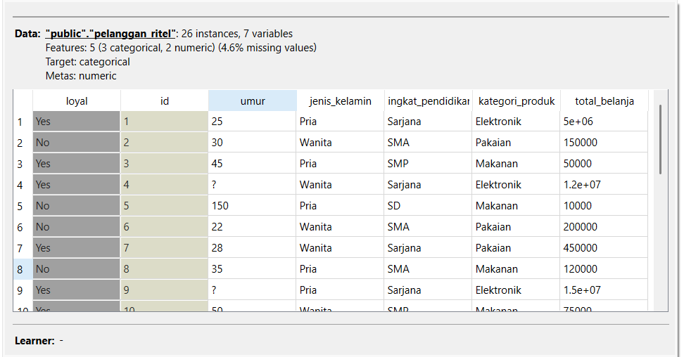
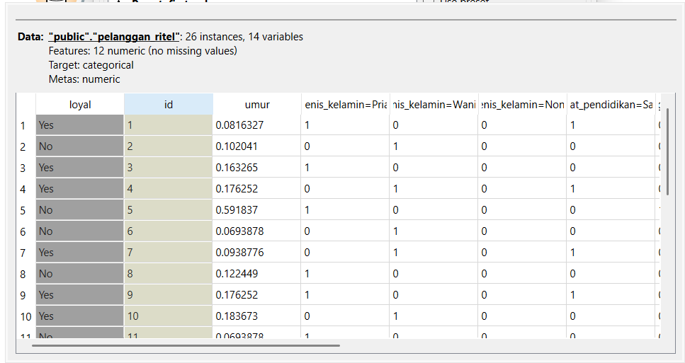
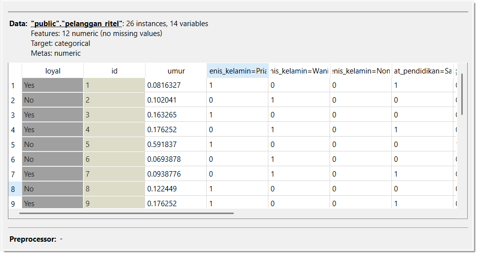

Pertemuan 4#
Analisis Data Campuran Menggunakan KNN di Orange#
1. Dataset#
Dataset yang digunakan merupakan data pelanggan ritel yang memiliki beberapa atribut seperti umur, jenis kelamin, tingkat pendidikan, kategori produk, total belanja, dan status loyalitas pelanggan.
Tampilan Dataset#

Gambar di atas menunjukkan dataset yang digunakan dalam penelitian ini.
2. Identifikasi Data Campuran#
Berdasarkan dataset yang digunakan, terdapat beberapa tipe atribut yang berbeda yaitu:
Atribut numerik#
umur
total_belanja
Atribut kategorikal#
jenis_kelamin
tingkat_pendidikan
kategori_produk
Atribut identitas#
id
Atribut target#
loyal
Karena dataset memiliki atribut numerik dan kategorikal secara bersamaan, maka dataset termasuk data campuran (mixed data). Algoritma K-Nearest Neighbor (KNN) menggunakan perhitungan jarak seperti Euclidean Distance yang bekerja optimal pada data numerik sehingga data kategorikal perlu diubah terlebih dahulu.
3. Menghapus Atribut yang Tidak Digunakan#
Kolom id hanya berfungsi sebagai identitas data sehingga tidak digunakan dalam proses klasifikasi.
Proses ini dilakukan menggunakan widget Select Columns pada Orange.
Select Columns#

Feature yang digunakan:
umur
jenis_kelamin
tingkat_pendidikan
kategori_produk
total_belanja
Target:
loyal
4. Menangani Missing Value#
Pada dataset terdapat beberapa nilai yang hilang yang ditandai dengan simbol “?”.
Contohnya:
umur = ?
total_belanja = ?
jenis_kelamin = ?
Nilai yang hilang ditangani menggunakan widget Impute.
Impute#

Metode yang digunakan:
Average untuk data numerik
Most Frequent untuk data kategorikal
5. Mengubah Data Kategorikal Menjadi Numerik#
Atribut kategorikal seperti jenis_kelamin, tingkat_pendidikan, dan kategori_produk tidak dapat langsung diproses oleh algoritma KNN.
Oleh karena itu dilakukan transformasi menggunakan widget Continuize dengan metode One Hot Encoding.
Continuize#

Contoh perubahan:
jenis_kelamin
Pria → (1,0)
Wanita → (0,1)
6. Penerapan Algoritma KNN#
Setelah semua data menjadi numerik dan tidak memiliki nilai kosong, algoritma K-Nearest Neighbor diterapkan.
KNN Model#

Parameter yang digunakan:
K = 3
Algoritma KNN akan mencari tetangga terdekat berdasarkan jarak Euclidean untuk menentukan kelas data.
7. Evaluasi Model#
Evaluasi model dilakukan menggunakan widget Test & Score.
Test and Score#

Metode evaluasi yang digunakan:
Cross Validation
Accuracy
Precision
Recall
F1 Score
Hasil evaluasi menunjukkan performa model dalam memprediksi pelanggan loyal atau tidak loyal.
8. Workflow Orange#
Berikut merupakan workflow yang digunakan dalam penelitian ini.
Workflow#

Alur proses:
File / SQL Table
↓
Select Columns
↓
Impute
↓
Continuize
↓
kNN
↓
Test & Score
Kesimpulan#
Dataset pelanggan ritel mengandung data campuran antara atribut numerik dan kategorikal. Oleh karena itu diperlukan proses preprocessing sebelum menerapkan algoritma KNN. Proses tersebut meliputi penghapusan atribut identitas, penanganan missing value, serta transformasi atribut kategorikal menjadi numerik menggunakan metode one-hot encoding. Setelah preprocessing dilakukan, algoritma KNN dapat digunakan untuk melakukan klasifikasi pelanggan loyal dan tidak loyal.